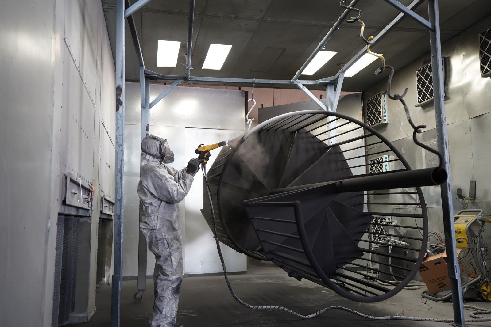
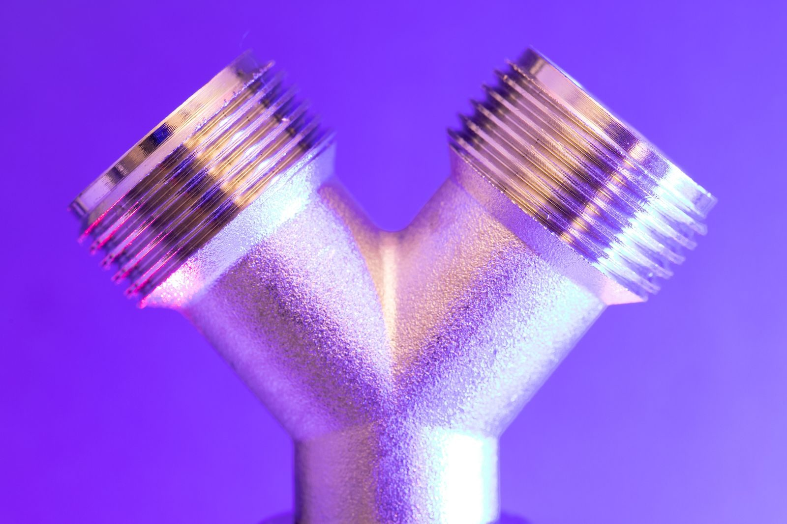

Start from the environment
The service environment eliminates most options immediately. Indoor, dry and decorative is a different problem from outdoor, coastal and load-bearing. Salt spray, humidity, cleaning chemicals and abrasion all narrow the field before cost is even considered.
Writing the environment down as a sentence - for example, outdoor coastal, cleaned weekly with an alkaline detergent, load-bearing contact surface - is usually enough to reduce a long finish list to two or three candidates.
Finish changes dimensions
Anodising grows an aluminium part by a measurable amount per surface; plating and powder coating add a layer too. Where a tight tolerance sits on a finished surface, that thickness has to be in the drawing, or the finished part will be out of specification even though the machined one was perfect.
The usual fix is to state a pre-finish dimension with an allowance, or to mask the critical surface so it is not coated. Masking adds an operation, so it is worth checking whether the tolerance can simply be loosened instead.
Mass-produced fittings are a useful reference
Commodity hardware - brackets, connectors, fittings - has had its finish optimised over decades, and studying those choices is a fast way to shortlist options for a new part. Hardware suppliers such as Zimmor Hardware, which manufactures metal hardware and fittings at volume, show how a finish decision is usually tied to a specific environment rather than to appearance alone.
Reading it that way turns a shelf of similar-looking products into a map: what lives outdoors is plated or coated, what needs conductivity is left bare or plated with a conductive layer, and what needs abrasion resistance is hardened or anodised.
Then let cost settle it
Once two or three finishes meet the functional requirement, choose between them on total cost: the finishing operation itself, the inspection it demands, and the scrap rate it creates. A finish that halves the reject rate often beats a cheaper one that does not.
Lead time belongs in that calculation too. A finish with a two-week subcontractor queue can delay a whole build, and the cost of that delay is rarely captured when the finish is selected.

Corrosion is chemistry, not a property of a coating
A finish works by interrupting a corrosion mechanism, so the first question is which mechanism applies. Atmospheric humidity and salt drive galvanic and pitting corrosion on steel and aluminium. Acid or alkaline cleaning chemicals attack specific metals. Crevices between two parts trap electrolyte and corrode even where the exposed surfaces look fine. Abrasion removes a soft coating and exposes the metal underneath.
Naming the mechanism narrows the field faster than comparing finish properties in the abstract. Salt spray with periodic cleaning points at a barrier or sacrificial coating; a crevice in a wet assembly points at material choice as much as at finish; an abrasive environment points at hardness rather than at appearance.
The finish families and what each is for
Coating finishes are applied on top of the metal: electroplating, anodising, conversion coatings, paint and powder coat. Sacrificial finishes protect the substrate by corroding preferentially, which is why zinc plating protects a scratched steel part where a decorative coating would not. Barrier finishes protect by exclusion and fail where the barrier is breached.
Surface modification finishes change the metal itself: passivation removes free iron from stainless, hardening by nitriding changes the surface metallurgy, and blasting changes both texture and residual stress. Choosing between these families is a functional decision, and appearance is a constraint on top of it rather than the starting point.
Anodising: decorative or hard
Anodising is an electrolytic conversion of the aluminium surface into an oxide layer, so it cannot chip off the way a coating can. Decorative anodising builds a thin layer of a few micrometres and takes dye well, which is why it is common on visible aluminium parts. Hard anodising builds a substantially thicker layer that is far more abrasion resistant, and it grows the part noticeably on every coated surface.
Two consequences matter to a designer. The first is dimensional: a tight bore that is anodised after machining will come out undersized unless the growth is in the drawing or the surface is masked. The second is that the oxide layer is not conductive, so an anodised part provides no electrical continuity across its own surfaces.

Plating and the embrittlement question
Zinc plating protects steel by sacrificing itself, and it is normally finished with a passivation that delays the onset of white rust. Nickel and chrome plating provide hardness and appearance, and both are barrier coatings whose protection depends on remaining intact. Each has its own thickness ranges and its own effect on the final dimension.
For high-strength steels, electroplating carries a specific risk: hydrogen can be absorbed during the process and cause delayed cracking under load. The mitigation is a defined baking cycle after plating. Where a part is specified in a high-strength grade and plated, the baking requirement belongs on the drawing rather than in the supplier's discretion.
Powder coat and paint: pretreatment is the process
Powder coating and wet paint both depend on what happens before the coating is applied. Degreasing, and for aluminium a conversion coating, determine whether the film adheres and how it behaves under a scratch or in salt spray. Two suppliers using the same powder can deliver very different durability because their pretreatment lines differ.
The other design consequence is that a coated part is coated everywhere unless it is masked. Threads, bores that must remain a specific size, and surfaces that must stay conductive all need masking, which adds an operation. Where those features exist, it is usually cheaper to define them after coating - for example by chasing a thread - than to mask extensively.
Non-coating finishes worth remembering
Passivation of stainless steel dissolves free iron left by machining or handling and restores the passive oxide layer. It adds no measurable thickness and is often the correct finish for a stainless part in a corrosive environment where plating would be pointless. Bead blasting produces a uniform matte texture and can be used for appearance or for adhesion preparation.
Mechanical finishes such as polishing, brushing or tumbling change appearance and can improve fatigue behaviour by removing surface defects, but they provide no corrosion protection and are often paired with a coating. Being explicit about which of these is intended avoids a part arriving with the wrong texture for the next operation.
Cost and lead time comparison
In-house finishes such as passivation and bead blasting usually add little cost and no external queue. Electroplating and anodising are usually subcontracted, which introduces a lead time that belongs in the plan. Powder coating is often local but requires a line large enough for the part, which matters for anything oversized.
The hidden cost is the handling between operations. A finish that requires the part to travel adds packing, risk of damage and a scheduling dependency. Where a finish can be folded into the same supplier's route, the total lead time is more predictable even if the nominal price is not the lowest.
Deciding in the right order
Work in this order: environment, then function, then geometry, then cost. The environment eliminates most options. The function selects among what remains. The geometry - threads, bores, shadowed recesses, masking needs - rules out finishes that cannot be applied usefully to this part. Only then does cost choose between the survivors.
Reversing the order is what produces the familiar failures: a cheap finish that fails in service, or a durable finish that cannot be applied to a feature the design requires. Writing the environment and the function down as a sentence before comparing finishes keeps the decision anchored to the part rather than to the catalogue.
Coating thickness is a dimensional decision, not a cosmetic one
Every finish that grows on the surface changes the size of the part. Sulphuric anodising (Type II) typically adds somewhere around 5-25 microns per surface, hard anodising (Type III) roughly 25-50 microns, zinc plating around 5-12 microns, electroless nickel commonly 10-25 microns, and powder coating is much thicker again, often 60-120 microns.
That matters wherever two parts are meant to fit. A 10 mm shaft that is anodised on both sides can finish a few hundredths larger, which is enough to destroy a light press fit and enough to make a bearing seat tight. Chromate conversion coatings are far thinner and barely move the dimension, which is one reason they survive in applications where anodising does not.
Specify pre-plate dimensions, or mask the surfaces that must stay exact
The practical fix is to decide on the drawing which surfaces are functional and which are decorative. Threads, bores and sealing faces can be masked so they receive no build-up; alternatively the machined size can be reduced by the expected coating thickness so the finished part lands on nominal. Both approaches work, but the decision has to be made before the parts are machined, not after they come back from the finisher.
Tapped holes are the classic trap: a coating on the thread flanks reduces the minor diameter and a screw will bind. Masking the thread, or specifying a thread size finished after coating, removes the problem. The same logic applies to a dowel hole or a bearing bore - if it is a locating feature, it should either be masked or the dimension should be adjusted deliberately.
Frequently asked
How much does anodising change a dimension?
Decorative anodising grows the surface by a few micrometres; hard anodising grows it considerably more, on every coated surface. Where a tolerance sits on an anodised surface, the expected growth has to be stated in the drawing.
Which finish is best for outdoor steel?
It depends on exposure and expected life. Zinc plating with a passivation, hot-dip galvanising or a powder coat each suit different conditions, and the choice is normally made on required salt-spray life and whether the part will be handled or abraded.
Can a finished part still be machined?
A coated or hardened surface can be machined, but the coating is destroyed locally and may need rework. It is usually better to complete all machining before finishing, and to mask surfaces that must stay conductive or dimensionally exact.